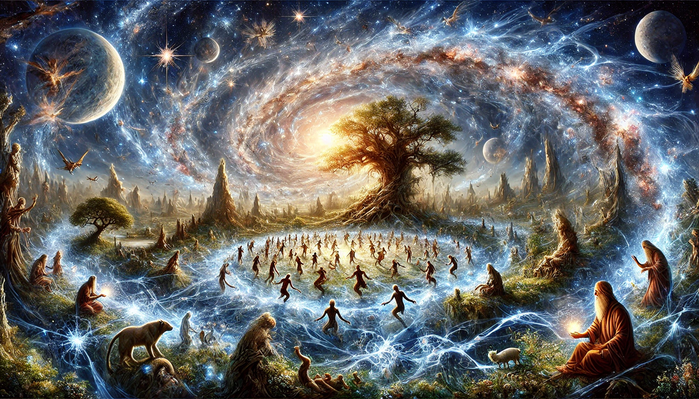
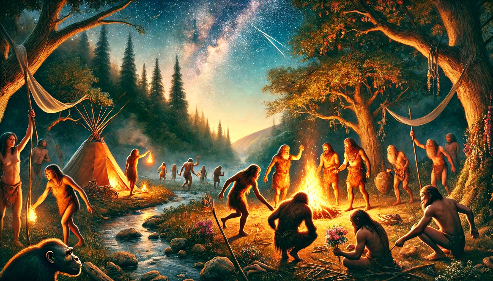
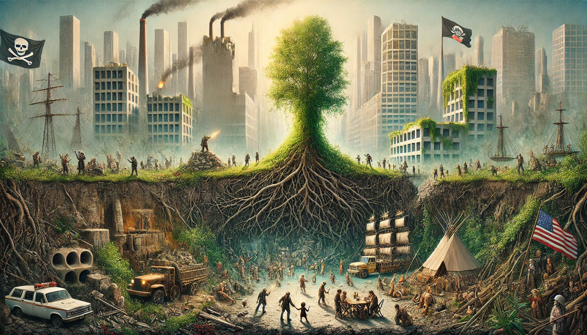
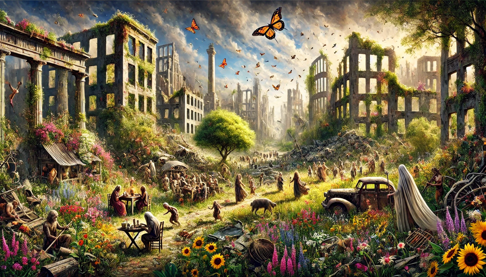
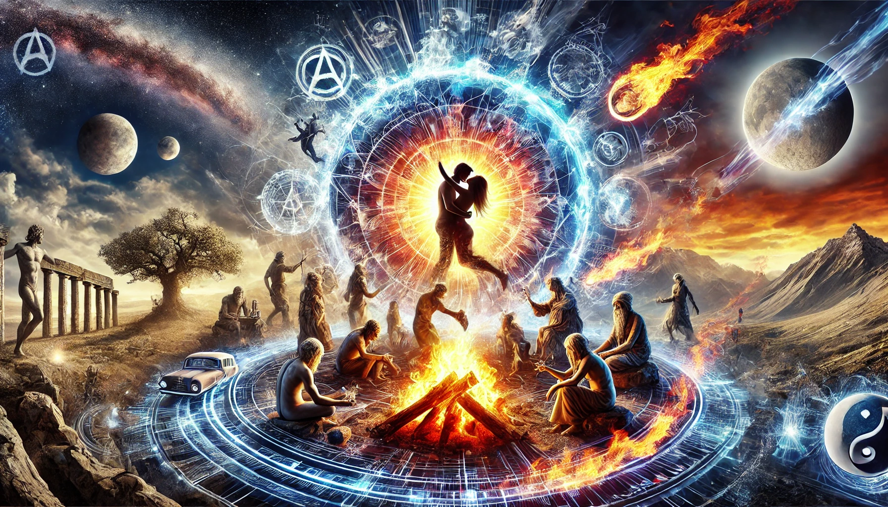
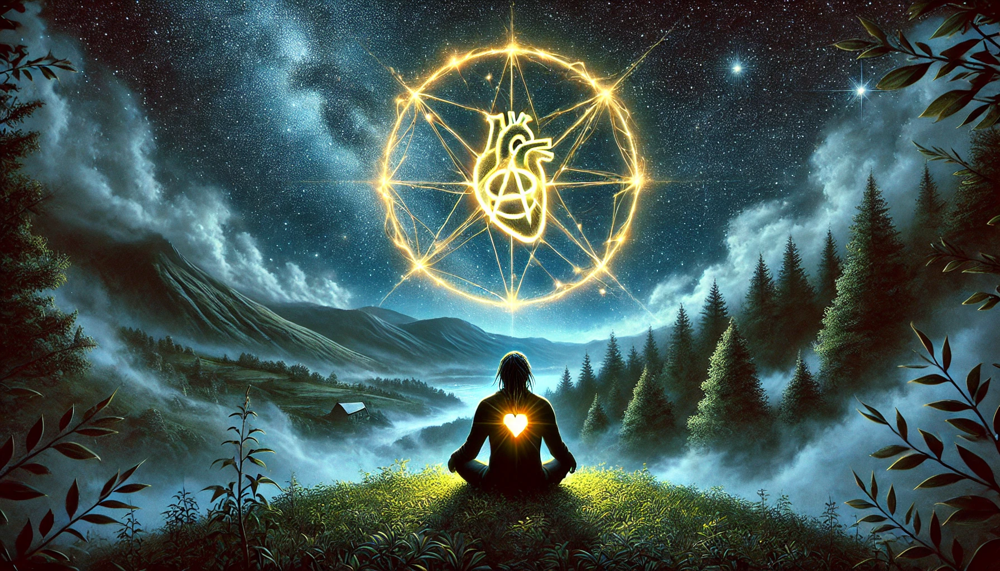

Anarchy always is, always was, and always will be because it is not a system imposed, a structure to be erected, or a doctrine to be followed—it is the primordial state of being, woven into the fabric of existence itself. Before laws, hierarchies, or even the notion of “order,” there was the raw, unmediated flow of life—life that self-organizes, adapts, and thrives without rulers or centralized authority. This state of free becoming is not a distant utopia or a relic of some mythic past; it is the undercurrent of reality, eternal and unyielding.

In prehistory, before the imposition of kings and priests, human beings existed in egalitarian bands, not governed by coercion but by mutual aid, shared rituals, and the deep awareness of their embeddedness in nature’s rhythms. This is not nostalgia but recognition: the Neanderthals burying their dead with flowers, the first human dances under the stars—these acts were anarchic, arising from the immediacy of lived experience, untouched by external domination.

Even as history layered itself with states, empires, and machines of control, anarchy remained, like the root system of a great forest buried beneath concrete. It whispers through peasant revolts, through the Zapatistas’ jungles, through pirate utopias and nomadic camps, and in the countless acts of quiet refusal that evade history’s gaze. It is there in every child’s laughter, every spark of creativity, every moment where humans transcend the roles imposed upon them.

After the collapse of systems, after the last empire crumbles into dust and the machines of oppression rust into ruin, anarchy will still be. It will pulse in the soil reclaiming abandoned cities, in the way humans will once again remember how to live without masters, in the wind that carries the seeds of wildflowers to sprout in forgotten fields. It is not the absence of order but the ever-present potential of spontaneous, self-organized life—a dance that can never be fully choreographed.

Through all changes of time, anarchy persists because it is not contingent on the external; it is the internal, the elemental. It is the ungovernable nature of consciousness itself, the anarch of the soul that resists categorization, that refuses to kneel, that creates for the sheer joy of creating. Whether in a stone-age circle, a digital TAZ, or the ecstatic embrace of lovers, anarchy is the pulse of freedom, the irreducible essence of what it means to be alive.

So, it is not a question of whether anarchy is possible, but of whether we remember that it never left. It is a truth as constant as breath, as inevitable as the stars, and as immediate as the beating of your heart.